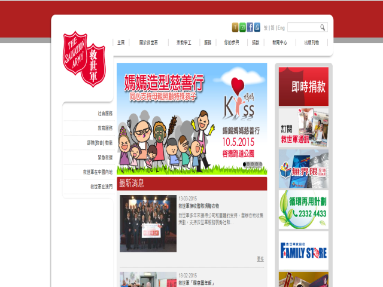

救世軍
目的與使命
救世軍是一間國際基督教教會和慈善組織，致力於塑造生命、關懷社群和造就信徒。救世軍現於全球126個國家和地區工作。 自1930年，救世軍已開始服務香港社會，至今超過80年。現時，我們於香港及澳門共開辦了81個社會服務單位、33間學校、 17個部隊（教會）和一個分隊，以及16間家品店。此外，我們於北京和雲南設立項目辦事處，推動內地的扶貧發展項目。
國際使命宣言
救世軍是一個國際性組織，是基督教普世教會之一。
本軍的信仰是基於聖經，本軍的服務是源於神的愛，本軍的使命是傳揚耶穌基督的福音，並奉祂的名在不分彼此的原則下去滿足有需要的人。
服務與活動
服務概覽
- 長者服務
- 復康服務
- 青年、家庭及社區服務
- 教育及就業服務
- 社區計劃
- 營舍服務
- 社會企業
救世軍85周年活動
- 救世軍「一心 ‧ 關懷」攝影比賽
- 救世軍文物回收大行動
籌募活動
- 救世軍錫錫媽媽慈善行
- 救世軍賀年禮品轉贈行動
- 愛心利是2015
- 救世軍聖誕募捐2014
- 救世軍聖誕糖義賣2014
- 救世軍港澳定向 / 親子定向追蹤 2014
- 救世軍「心好月圓」中秋行動 2014
- 救世軍全港賣旗日
慈善活動
- 救世軍捐贈箱
- 海港城愛心書包文具樂共享
- Hallmark Babies「童裝舊換新」活動
- 愛．「換」．遊 Beverly Hills Polo Club 舊旅行箱回收活動
就業與義工
就業機會
救世軍現有不同的就業機會，例如司機暨辦公室助理、兼職售貨員等等。欲了解最新就業資訊，可瀏覽網址：http://www.salvationarmy.org.hk/job_vacancies/5/
義務工作
救世軍不定期舉辦不同的籌款活動，幫助社會上有需要的人。如欲成為救世軍義工，可瀏覽以下網址：
http://www.salvationarmy.org.hk/hk/get_involved聯絡資料
- 電話： (852) 23324531
- 傳真： (852) 23850828
- 地址： 香港九龍油麻地永星里11號社區關係部
- 郵寄地址： 九龍中央郵箱70129號
- 電郵： ssdenq@ssd.salvation.org.hk
- 網址：http://www.salvationarmy.org.hk/hk
網頁截面： 
回到最頂